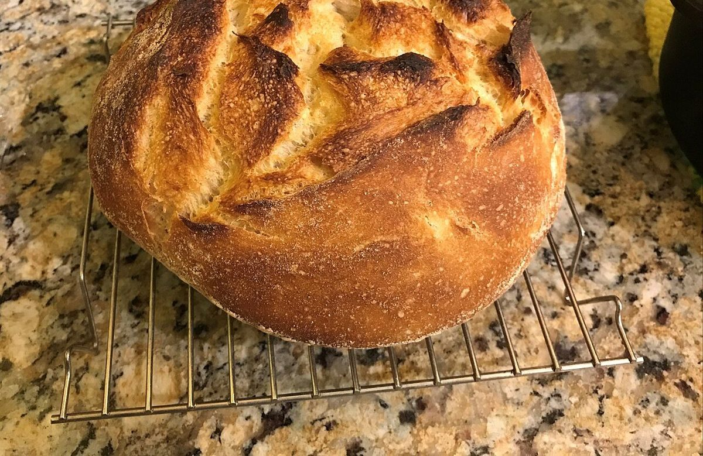
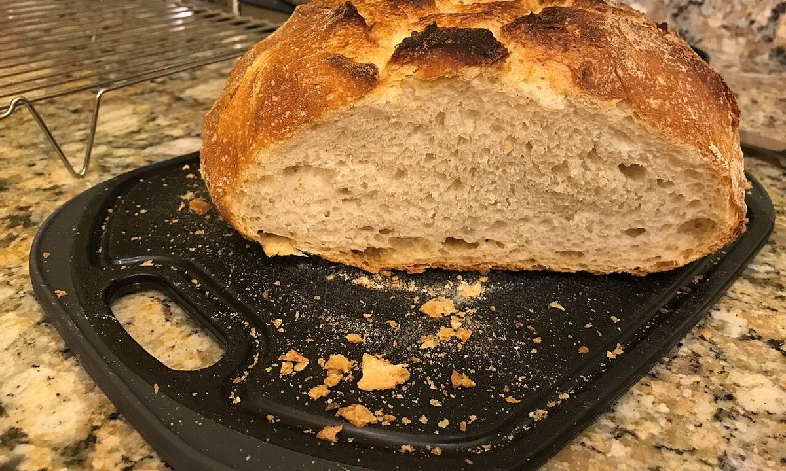
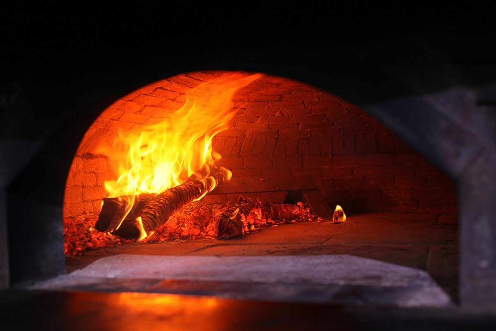
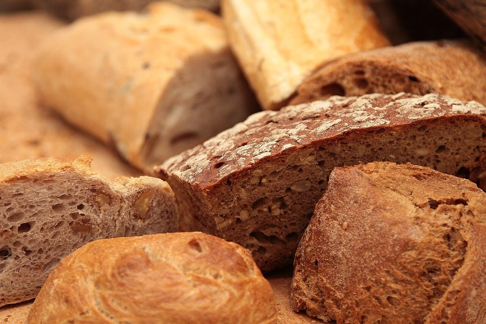

FIG.0 / パン屋 / 千葉県大網白里市
ブーランジェリーポラリス
千葉県大網白里市にあるパン屋「ブーランジェリー ポラリス」のご案内ページです。営業時間やメニューなど、詳しいことは準備中。まずはInstagramをのぞいてみてください。


制作側の連想
「ポラリス」から、二枚の三角定規を考えた。
店名の由来は分かりません。制作側は「ポラリス」という響きから、迷ったときの目印、ものごとの基準といった言葉を連想し、図面を引くときの基準になる三角定規をこのサイトのテーマにしました。三角定規は2枚で一組で、ページの番号も定規の角度(0°・30°・45°・60°・90°)にしています。お店の理念・由来とは無関係な、制作側の連想です。
FIG.1 / 30°-60°-90°
2枚を合わせると長方形。


同じ形の直角三角形を2枚、斜辺どうしで合わせると長方形になります。ここでは、パンづくりの途中を思わせる写真を斜めに切り分けて並べました。
写真は大網白里市やお店のものではありません。国外または撮影地不明のフリー素材で、提供しているパンを示すものでもありません。
FIG.2 / ご案内
お店のこと(確認できたものだけ)
| 所在地 | 〒299-3255 千葉県大網白里市みどりが丘３丁目１６−６ |
|---|---|
| 電話 | 0475-53-5856 |
| 営業時間 | 準備中 |
| 定休日 | 準備中 |
| ご予約 | 準備中 |
| 駐車場 | 準備中 |
| SNS | Instagram @boulangerie.polaris |
